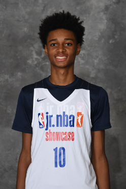
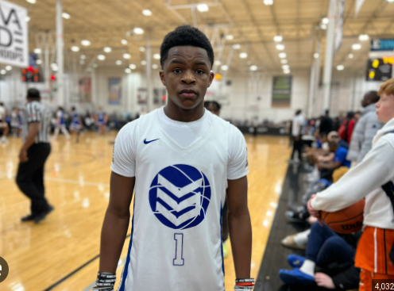

Examples of recruitments
You can get ranked in basketball by having discipline and going to exposure camps.
A ranked player in the class of 2027 who is ranked number 3 who is a small-forward and his name is Lincoln Cosby, also he is a 5-star commit.

Another ranked player in the class of 2027 who is ranked at numner 10 is a point guard and his name is Jamaal Mcknight Jr.

What theese two players have in common is that they both work hard to be in the position that they are in, they both went to NBA exposure camps, which is important becasue you get more publicity.
Click the link below to get back to the homepage.
Basketball 27